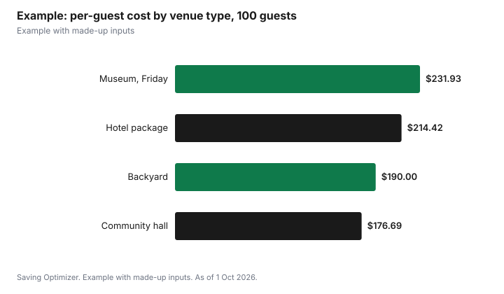

Weddings · Canada
Wedding Venue Types and Costs in Canada: Hotels, Halls, Museums, Restaurants and Backyards
Wedding venues in Canada range from a city hall chamber billed by the half hour to a museum or hotel ballroom with a five-figure minimum, so compare the all-in cost per guest rather than the room fee. Published examples as of 1 October 2026: Toronto's Gardiner Museum rents its 140-seat Terrace Room for $5,000 from Sunday to Friday and $6,000 on Saturday, then adds a 15% fee on food, alcohol and staffing from its exclusive caterers. The Royal Ontario Museum lists rooms from $1,500 for 100 seated guests. A Toronto community hall charges $157 an hour with alcohol, but you bring in everything else. Hotels and banquet halls usually bundle food and drinks into a per-person package with a minimum spend.
Key takeaways
- Compare total cost per guest, including food, drinks, rentals, tax and fees.
- Museum example: $5,000 Sunday to Friday, $6,000 Saturday, plus a 15% fee on catering.
- Halls are cheap per hour but need caterers, rentals, staff and often a liquor permit.
- Hotels and banquet halls often bundle a per-person package and a minimum spend.
- Backyards save the rental but add tents, washrooms, power and permits.
- Example with made-up inputs: four venue types for 100 guests.
Venue types compared
| Type | How it is priced | What is included | Watch for |
|---|---|---|---|
| Hotel or banquet hall | Per-person package, minimum spend | Food, bar, staff, tables, linens | Service charge, tax, minimums, exclusive vendors |
| Museum or heritage site | Room rental plus exclusive caterer | Room, some furniture | Catering fees, start times, decor rules |
| Community hall | Hourly room rate | Room, sometimes a kitchen | Caterer, rentals, staff, permit, insurance, cleanup |
| Restaurant | Food and drink minimum or set menu | Food, bar, staff | Capacity, dance floor, noise |
| Backyard or private land | No rental | Nothing | Tent, washrooms, power, permits, neighbours |
| City hall chamber | Per time block | Room only | Small capacity; reception elsewhere |
Hotels and banquet halls
These venues usually quote a per-person package covering dinner, bar, staff and basic decor, with a minimum spend that varies by day and season. The headline per-person price rarely includes the mandatory service charge and sales tax; under CRA rules, a mandatory service charge is part of the taxable price, so HST applies to it. Ask for an all-in sample invoice before you sign. Hotels may also offer room blocks for guests and a suite for the couple.
Museums and heritage venues
Museums and heritage sites often rent the room separately and require you to use their caterers. The Gardiner Museum's January 2026 events package lists its Terrace Room, which seats 140, at $5,000 from 4 p.m. to midnight Sunday to Friday and $6,000 on Saturday, or $6,000 and $7,000 until 3 a.m. Its rental rates are HST exempt and include in-house furniture and some audiovisual equipment, but food, alcohol and staffing from its exclusive caterers carry a 15% venue landmark fee. It does not allow events to start before 4 p.m., open flames or confetti.
| Venue and room | Seated capacity | Room rate |
|---|---|---|
| Gardiner Museum Terrace Room, Sunday to Friday, to midnight | 140 | $5,000 |
| Gardiner Museum Terrace Room, Saturday, to midnight | 140 | $6,000 |
| ROM RBC Foundation Glass Room | 100 | $1,500 |
| ROM c5 Lounge | 100 | $2,500 |
| ROM Crystal Court and Currelly Gallery, evening | 550 | $10,000 |
The City of Toronto also rents its museums and cultural centres for weddings and photography; Fort York National Historic Site requires a three-hour minimum, with rates on request, and some sites, such as the Clark Centre, do not allow weddings.
Community halls
A community hall's room fee is low, but you supply the rest: caterer, rentals, bar staff, decor and cleanup. In Toronto, Ralph Thornton Community Centre's 2026 rate for a private function with alcohol is $157 an hour for the full auditorium, before HST, with higher fees for hours after 9 p.m. If the hall has no liquor licence, Ontario requires a special occasion permit: $50 a day if drinks are free and $150 if you sell them.
Restaurants
A restaurant buyout or private room is often the simplest option for smaller weddings: food, drinks and staff are included, and the restaurant's liquor licence covers the bar. Pricing is usually a set menu or a food and drink minimum. Check capacity for a seated dinner, whether there is room to dance and whether the restaurant closes to the public for your event.
Backyards
A backyard wedding avoids a rental fee but adds tents, tables, chairs, washrooms, power, lighting and a rain plan. No Ontario liquor permit is needed to serve invited guests in a private residence, but outdoor or tented events elsewhere trigger notice requirements. Check municipal noise and tent rules and talk to neighbours.
Questions to ask every venue
- What is the room fee, minimum spend, service charge and tax, in writing?
- Which vendors are exclusive or required?
- What time can vendors set up, and when must the event end?
- Are tables, chairs, linens, dishes and audiovisual equipment included?
- Is there a dance floor, and are there noise limits?
- What are the deposit, payment schedule and cancellation terms?
- Does the venue require you or your vendors to carry liability insurance?
Example with made-up inputs
These numbers are an example with made-up inputs, apart from the published rates noted. For 100 guests: a hotel package at a made-up $165 per person plus a 15% service charge and 13% HST is $21,441.75. A museum with a $5,000 Friday room fee, made-up catering and bar of $140 per person ($14,000) plus the 15% landmark fee and 13% HST on catering is $23,193.00. A community hall for eight hours at $157 ($1,256 plus HST, $1,419.28) plus made-up catering $9,500, rentals $2,500, bar $3,000, staff $1,200 and a $50 permit is $17,669.28. A backyard with a made-up $6,500 for tent, rentals and washrooms, catering $9,500 and bar $3,000 is $19,000.
| Venue type | Total | Per guest |
|---|---|---|
| Hotel package | $21,441.75 | $214.42 |
| Museum, Friday | $23,193.00 | $231.93 |
| Community hall | $17,669.28 | $176.69 |
| Backyard | $19,000.00 | $190.00 |

Steps
- Set the guest count range and total budget.
- Shortlist venue types that fit the count.
- Ask each venue for an all-in sample invoice.
- Compare per-guest totals, not room fees.
- Read the contract for minimums, exclusive vendors and cancellation.
- Book, then confirm insurance and permit needs.
Common mistakes
- Comparing room fees alone.
- Forgetting service charges and tax on top of per-person prices.
- Missing exclusive-vendor rules.
- Underestimating rentals and staff at a hall or backyard.
- Booking before confirming end times and noise rules.
Related: 2027 wedding budget and vendor contracts.
Sources
- Gardiner Museum, Events Package, January 2026, gardinermuseum.on.ca, as of 1 Oct 2026.
- Royal Ontario Museum, Room Rates and Capacities, rom.on.ca, as of 1 Oct 2026.
- City of Toronto, Museum and cultural centre rentals, toronto.ca, as of 1 Oct 2026.
- Ralph Thornton Community Centre, Rates - Updated for 2026, ralphthornton.org, as of 1 Oct 2026.
- helloLCBO, Special Occasion Permit (SOP) FAQs, hellolcbo.com, as of 1 Oct 2026.
- Canada Revenue Agency, GST/HST rates and treatment of mandatory service charges, canada.ca, as of 1 Oct 2026.
- Per-person prices, service charge rate and rental amounts in the example are made-up inputs.
Frequently asked questions
What is the cheapest type of wedding venue in Canada?
A city hall chamber or community hall usually has the lowest room fee, but you add catering, rentals and staff. Compare per-guest totals.
How much does a museum wedding cost in Toronto?
The Gardiner Museum lists its 140-seat Terrace Room at $5,000 Sunday to Friday and $6,000 Saturday, plus a 15% fee on food, alcohol and staffing.
Do venues charge tax on the service charge?
Under CRA rules, a mandatory service charge is part of the taxable price, so sales tax applies to it.
Do I need a liquor permit at a hall?
In Ontario, yes if the hall has no liquor licence: $50 a day for free drinks or $150 for a cash bar.
What should a venue quote include?
Room fee, minimum spend, service charge, tax, included rentals, exclusive vendors, times and cancellation terms.
Is a backyard wedding cheaper?
Not always. Tents, rentals, washrooms and power can approach a venue's cost.
Researched and drafted with AI assistance and fact-checked against official Canadian sources. How we create content.
Disclosure: Saving Optimizer may earn a commission if a partner link is added later. No partnership is claimed on this page. Education only.